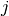
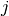

Reference¶
This is the class and function reference of scikit-learn. Please refer to the full user guide for further details, as the class and function raw specifications may not be enough to give full guidelines on their uses.
sklearn.base: Base classes and utility functions¶
Base class for all estimators.
Base classes¶
| base.BaseEstimator | Base class for all estimators in scikit-learn .. |
| base.ClassifierMixin | Mixin class for all classifiers in scikit-learn. |
| base.ClusterMixin | Mixin class for all cluster estimators in scikit-learn. |
| base.RegressorMixin | Mixin class for all regression estimators in scikit-learn. |
| base.TransformerMixin | Mixin class for all transformers in scikit-learn. |
Functions¶
| base.clone(estimator[, safe]) | Constructs a new estimator with the same parameters. |
sklearn.cluster: Clustering¶
The sklearn.cluster module gathers popular unsupervised clustering algorithms.
User guide: See the Clustering section for further details.
Classes¶
| cluster.AffinityPropagation([damping, ...]) | Perform Affinity Propagation Clustering of data :Parameters: damping: float, optional, default: 0.5 : Damping factor between 0.5 and 1. |
| cluster.DBSCAN([eps, min_samples, metric, ...]) | Perform DBSCAN clustering from vector array or distance matrix. |
| cluster.KMeans([n_clusters, init, n_init, ...]) | K-Means clustering :Parameters: n_clusters : int, optional, default: 8 The number of clusters to form as well as the number of centroids to generate. |
| cluster.MiniBatchKMeans([n_clusters, init, ...]) | Mini-Batch K-Means clustering :Parameters: n_clusters : int, optional, default: 8 The number of clusters to form as well as the number of centroids to generate. |
| cluster.MeanShift([bandwidth, seeds, ...]) | MeanShift clustering :Parameters: bandwidth : float, optional Bandwidth used in the RBF kernel If not set, the bandwidth is estimated. |
| cluster.SpectralClustering([n_clusters, ...]) | Apply clustering to a projection to the normalized laplacian. |
| cluster.Ward([n_clusters, memory, ...]) | Ward hierarchical clustering: constructs a tree and cuts it. |
Functions¶
| cluster.estimate_bandwidth(X[, quantile, ...]) | Estimate the bandwidth to use with MeanShift algorithm :Parameters: X : array [n_samples, n_features] Input points. |
| cluster.k_means(X, n_clusters[, init, ...]) | K-means clustering algorithm. |
| cluster.ward_tree(X[, connectivity, ...]) | Ward clustering based on a Feature matrix. |
| cluster.affinity_propagation(S[, ...]) | Perform Affinity Propagation Clustering of data :Parameters: S: array [n_samples, n_samples] : Matrix of similarities between points preference: array [n_samples,] or float, optional, default: None : Preferences for each point - points with larger values of preferences are more likely to be chosen as exemplars. |
| cluster.dbscan(X[, eps, min_samples, ...]) | Perform DBSCAN clustering from vector array or distance matrix. |
| cluster.mean_shift(X[, bandwidth, seeds, ...]) | Perform MeanShift Clustering of data using a flat kernel Seed using a binning technique for scalability. |
| cluster.spectral_clustering(affinity[, ...]) | Apply clustering to a projection to the normalized laplacian. |
sklearn.cluster.bicluster: Biclustering¶
User guide: See the Biclustering section for further details.
Classes¶
| SpectralBiclustering([n_clusters, method, ...]) | Spectral biclustering (Kluger, 2003). |
| SpectralCoclustering([n_clusters, ...]) | Spectral Co-Clustering algorithm (Dhillon, 2001). |
sklearn.covariance: Covariance Estimators¶
The sklearn.covariance module includes methods and algorithms to robustly estimate the covariance of features given a set of points. The precision matrix defined as the inverse of the covariance is also estimated. Covariance estimation is closely related to the theory of Gaussian Graphical Models.
User guide: See the Covariance estimation section for further details.
| covariance.EmpiricalCovariance([...]) | Maximum likelihood covariance estimator :Parameters: store_precision : bool Specifies if the estimated precision is stored. |
| covariance.EllipticEnvelope([...]) | An object for detecting outliers in a Gaussian distributed dataset. |
| covariance.GraphLasso([alpha, mode, tol, ...]) | Sparse inverse covariance estimation with an l1-penalized estimator. |
| covariance.GraphLassoCV([alphas, ...]) | Sparse inverse covariance w/ cross-validated choice of the l1 penalty :Parameters: alphas : integer, or list positive float, optional If an integer is given, it fixes the number of points on the grids of alpha to be used. |
| covariance.LedoitWolf([store_precision, ...]) | LedoitWolf Estimator Ledoit-Wolf is a particular form of shrinkage, where the shrinkage coefficient is computed using O. |
| covariance.MinCovDet([store_precision, ...]) | Minimum Covariance Determinant (MCD): robust estimator of covariance. |
| covariance.OAS([store_precision, ...]) | Oracle Approximating Shrinkage Estimator OAS is a particular form of shrinkage described in “Shrinkage Algorithms for MMSE Covariance Estimation” Chen et al., IEEE Trans. |
| covariance.ShrunkCovariance([...]) | Covariance estimator with shrinkage :Parameters: store_precision : bool Specify if the estimated precision is stored shrinkage : float, 0 <= shrinkage <= 1 Coefficient in the convex combination used for the computation of the shrunk estimate. |
| covariance.empirical_covariance(X[, ...]) | Computes the Maximum likelihood covariance estimator :Parameters: X : 2D ndarray, shape (n_samples, n_features) Data from which to compute the covariance estimate assume_centered : Boolean If True, data are not centered before computation. |
| covariance.ledoit_wolf(X[, assume_centered, ...]) | Estimates the shrunk Ledoit-Wolf covariance matrix. |
| covariance.shrunk_covariance(emp_cov[, ...]) | Calculates a covariance matrix shrunk on the diagonal :Parameters: emp_cov : array-like, shape (n_features, n_features) Covariance matrix to be shrunk shrinkage : float, 0 <= shrinkage <= 1 Coefficient in the convex combination used for the computation of the shrunk estimate. |
| covariance.oas(X[, assume_centered]) | Estimate covariance with the Oracle Approximating Shrinkage algorithm. |
| covariance.graph_lasso(emp_cov, alpha[, ...]) | l1-penalized covariance estimator |
sklearn.cross_validation: Cross Validation¶
The sklearn.cross_validation module includes utilities for cross- validation and performance evaluation.
User guide: See the Cross-validation: evaluating estimator performance section for further details.
| cross_validation.Bootstrap(n[, n_iter, ...]) | Random sampling with replacement cross-validation iterator Provides train/test indices to split data in train test sets while resampling the input n_iter times: each time a new random split of the data is performed and then samples are drawn (with replacement) on each side of the split to build the training and test sets. |
| cross_validation.KFold(n[, n_folds, ...]) | K-Folds cross validation iterator. |
| cross_validation.LeaveOneLabelOut(labels[, ...]) | Leave-One-Label_Out cross-validation iterator Provides train/test indices to split data according to a third-party provided label. |
| cross_validation.LeaveOneOut(n[, indices]) | Leave-One-Out cross validation iterator. |
| cross_validation.LeavePLabelOut(labels, p[, ...]) | Leave-P-Label_Out cross-validation iterator Provides train/test indices to split data according to a third-party provided label. |
| cross_validation.LeavePOut(n, p[, indices]) | Leave-P-Out cross validation iterator Provides train/test indices to split data in train test sets. |
| cross_validation.StratifiedKFold(y[, ...]) | Stratified K-Folds cross validation iterator Provides train/test indices to split data in train test sets. |
| cross_validation.ShuffleSplit(n[, n_iter, ...]) | Random permutation cross-validation iterator. |
| cross_validation.StratifiedShuffleSplit(y[, ...]) | Stratified ShuffleSplit cross validation iterator Provides train/test indices to split data in train test sets. |
| cross_validation.train_test_split(*arrays, ...) | Split arrays or matrices into random train and test subsets Quick utility that wraps calls to check_arrays and next(iter(ShuffleSplit(n_samples))) and application to input data into a single call for splitting (and optionally subsampling) data in a oneliner. |
| cross_validation.cross_val_score(estimator, X) | Evaluate a score by cross-validation :Parameters: estimator : estimator object implementing ‘fit’ The object to use to fit the data. |
| cross_validation.permutation_test_score(...) | Evaluate the significance of a cross-validated score with permutations :Parameters: estimator : estimator object implementing ‘fit’ The object to use to fit the data. |
| cross_validation.check_cv(cv[, X, y, classifier]) | Input checker utility for building a CV in a user friendly way. |
sklearn.datasets: Datasets¶
The sklearn.datasets module includes utilities to load datasets, including methods to load and fetch popular reference datasets. It also features some artificial data generators.
User guide: See the Dataset loading utilities section for further details.
Loaders¶
| datasets.fetch_20newsgroups([data_home, ...]) | Load the filenames and data from the 20 newsgroups dataset. |
| datasets.fetch_20newsgroups_vectorized([...]) | Load the 20 newsgroups dataset and transform it into tf-idf vectors. |
| datasets.load_boston() | Load and return the boston house-prices dataset (regression). |
| datasets.load_diabetes() | Load and return the diabetes dataset (regression). |
| datasets.load_digits([n_class]) | Load and return the digits dataset (classification). |
| datasets.load_files(container_path[, ...]) | Load text files with categories as subfolder names. |
| datasets.load_iris() | Load and return the iris dataset (classification). |
| datasets.load_lfw_pairs([download_if_missing]) | Alias for fetch_lfw_pairs(download_if_missing=False) Check fetch_lfw_pairs.__doc__ for the documentation and parameter list. |
| datasets.fetch_lfw_pairs([subset, ...]) | Loader for the Labeled Faces in the Wild (LFW) pairs dataset This dataset is a collection of JPEG pictures of famous people collected on the internet, all details are available on the official website: http://vis-www.cs.umass.edu/lfw/ Each picture is centered on a single face. |
| datasets.load_lfw_people([download_if_missing]) | Alias for fetch_lfw_people(download_if_missing=False) Check fetch_lfw_people.__doc__ for the documentation and parameter list. |
| datasets.fetch_lfw_people([data_home, ...]) | Loader for the Labeled Faces in the Wild (LFW) people dataset This dataset is a collection of JPEG pictures of famous people collected on the internet, all details are available on the official website: http://vis-www.cs.umass.edu/lfw/ Each picture is centered on a single face. |
| datasets.load_linnerud() | Load and return the linnerud dataset (multivariate regression). |
| datasets.fetch_mldata(dataname[, ...]) | Fetch an mldata.org data set If the file does not exist yet, it is downloaded from mldata.org . |
| datasets.fetch_olivetti_faces([data_home, ...]) | Loader for the Olivetti faces data-set from AT&T. |
| datasets.fetch_california_housing([...]) | Loader for the California housing dataset from StatLib. |
| datasets.fetch_covtype([data_home, ...]) | Load the covertype dataset, downloading it if necessary. |
| datasets.load_mlcomp(name_or_id[, set_, ...]) | Load a datasets as downloaded from http://mlcomp.org :Parameters: name_or_id : the integer id or the string name metadata of the MLComp dataset to load `set_` : select the portion to load: ‘train’, ‘test’ or ‘raw’ mlcomp_root : the filesystem path to the root folder where MLComp datasets are stored, if mlcomp_root is None, the MLCOMP_DATASETS_HOME environment variable is looked up instead. |
| datasets.load_sample_image(image_name) | Load the numpy array of a single sample image :Parameters: image_name: {`china.jpg`, `flower.jpg`} : The name of the sample image loaded :Returns: img: 3D array : The image as a numpy array: height x width x color .. |
| datasets.load_sample_images() | Load sample images for image manipulation. |
| datasets.load_svmlight_file(f[, n_features, ...]) | Load datasets in the svmlight / libsvm format into sparse CSR matrix This format is a text-based format, with one sample per line. |
| datasets.dump_svmlight_file(X, y, f[, ...]) | Dump the dataset in svmlight / libsvm file format. |
Samples generator¶
| datasets.make_blobs([n_samples, n_features, ...]) | Generate isotropic Gaussian blobs for clustering. |
| datasets.make_classification([n_samples, ...]) | Generate a random n-class classification problem. |
| datasets.make_circles([n_samples, shuffle, ...]) | Make a large circle containing a smaller circle in 2d. |
| datasets.make_friedman1([n_samples, ...]) | Generate the “Friedman #1” regression problem This dataset is described in Friedman [1] and Breiman [2]. |
| datasets.make_friedman2([n_samples, noise, ...]) | Generate the “Friedman #2” regression problem This dataset is described in Friedman [1] and Breiman [2]. |
| datasets.make_friedman3([n_samples, noise, ...]) | Generate the “Friedman #3” regression problem This dataset is described in Friedman [1] and Breiman [2]. |
| datasets.make_gaussian_quantiles([mean, ...]) | Generate isotropic Gaussian and label samples by quantile This classification dataset is constructed by taking a multi-dimensional standard normal distribution and defining classes separated by nested concentric multi-dimensional spheres such that roughly equal numbers of samples are in each class (quantiles of the  distribution). distribution). |
| datasets.make_hastie_10_2([n_samples, ...]) | Generates data for binary classification used in Hastie et al. |
| datasets.make_low_rank_matrix([n_samples, ...]) | Generate a mostly low rank matrix with bell-shaped singular values Most of the variance can be explained by a bell-shaped curve of width effective_rank: the low rank part of the singular values profile is:: (1 - tail_strength) * exp(-1.0 * (i / effective_rank) ** 2) The remaining singular values’ tail is fat, decreasing as:: tail_strength * exp(-0.1 * i / effective_rank). |
| datasets.make_moons([n_samples, shuffle, ...]) | Make two interleaving half circles A simple toy dataset to visualize clustering and classification algorithms. |
| datasets.make_multilabel_classification([...]) | Generate a random multilabel classification problem. |
| datasets.make_regression([n_samples, ...]) | Generate a random regression problem. |
| datasets.make_s_curve([n_samples, noise, ...]) | Generate an S curve dataset. |
| datasets.make_sparse_coded_signal(n_samples, ...) | Generate a signal as a sparse combination of dictionary elements. |
| datasets.make_sparse_spd_matrix([dim, ...]) | Generate a sparse symmetric definite positive matrix. |
| datasets.make_sparse_uncorrelated([...]) | Generate a random regression problem with sparse uncorrelated design This dataset is described in Celeux et al [1]. |
| datasets.make_spd_matrix(n_dim[, random_state]) | Generate a random symmetric, positive-definite matrix. |
| datasets.make_swiss_roll([n_samples, noise, ...]) | Generate a swiss roll dataset. |
| datasets.make_biclusters(shape, n_clusters) | Generate an array with constant block diagonal structure for biclustering. |
| datasets.make_checkerboard(shape, n_clusters) | Generate an array with block checkerboard structure for biclustering. |
sklearn.decomposition: Matrix Decomposition¶
The sklearn.decomposition module includes matrix decomposition algorithms, including among others PCA, NMF or ICA. Most of the algorithms of this module can be regarded as dimensionality reduction techniques.
User guide: See the Decomposing signals in components (matrix factorization problems) section for further details.
| decomposition.PCA([n_components, copy, whiten]) | Principal component analysis (PCA) Linear dimensionality reduction using Singular Value Decomposition of the data and keeping only the most significant singular vectors to project the data to a lower dimensional space. |
| decomposition.ProjectedGradientNMF([...]) | Non-Negative matrix factorization by Projected Gradient (NMF) :Parameters: n_components : int or None Number of components, if n_components is not set all components are kept init : ‘nndsvd’ | ‘nndsvda’ | ‘nndsvdar’ | ‘random’ Method used to initialize the procedure. |
| decomposition.RandomizedPCA([n_components, ...]) | Principal component analysis (PCA) using randomized SVD Linear dimensionality reduction using approximated Singular Value Decomposition of the data and keeping only the most significant singular vectors to project the data to a lower dimensional space. |
| decomposition.KernelPCA([n_components, ...]) | Kernel Principal component analysis (KPCA) Non-linear dimensionality reduction through the use of kernels. |
| decomposition.FactorAnalysis([n_components, ...]) | Factor Analysis (FA) A simple linear generative model with Gaussian latent variables. |
| decomposition.FastICA([n_components, ...]) | FastICA: a fast algorithm for Independent Component Analysis. |
| decomposition.TruncatedSVD([n_components, ...]) | Dimensionality reduction using truncated SVD (aka LSA). |
| decomposition.NMF([n_components, init, ...]) | Non-Negative matrix factorization by Projected Gradient (NMF) :Parameters: n_components : int or None Number of components, if n_components is not set all components are kept init : ‘nndsvd’ | ‘nndsvda’ | ‘nndsvdar’ | ‘random’ Method used to initialize the procedure. |
| decomposition.SparsePCA([n_components, ...]) | Sparse Principal Components Analysis (SparsePCA) Finds the set of sparse components that can optimally reconstruct the data. |
| decomposition.MiniBatchSparsePCA([...]) | Mini-batch Sparse Principal Components Analysis Finds the set of sparse components that can optimally reconstruct the data. |
| decomposition.SparseCoder(dictionary[, ...]) | Sparse coding Finds a sparse representation of data against a fixed, precomputed dictionary. |
| decomposition.DictionaryLearning([...]) | Dictionary learning Finds a dictionary (a set of atoms) that can best be used to represent data using a sparse code. |
| decomposition.MiniBatchDictionaryLearning([...]) | Mini-batch dictionary learning Finds a dictionary (a set of atoms) that can best be used to represent data using a sparse code. |
| decomposition.fastica(X[, n_components, ...]) | Perform Fast Independent Component Analysis. |
| decomposition.dict_learning(X, n_components, ...) | Solves a dictionary learning matrix factorization problem. |
| decomposition.dict_learning_online(X[, ...]) | Solves a dictionary learning matrix factorization problem online. |
| decomposition.sparse_encode(X, dictionary[, ...]) | Sparse coding Each row of the result is the solution to a sparse coding problem. |
sklearn.dummy: Dummy estimators¶
User guide: See the Model evaluation: quantifying the quality of predictions section for further details.
| dummy.DummyClassifier([strategy, random_state]) | DummyClassifier is a classifier that makes predictions using simple rules. |
| dummy.DummyRegressor | DummyRegressor is a regressor that always predicts the mean of the training targets. |
sklearn.ensemble: Ensemble Methods¶
The sklearn.ensemble module includes ensemble-based methods for classification and regression.
User guide: See the Ensemble methods section for further details.
| ensemble.AdaBoostClassifier(...[, criterion]) | An AdaBoost classifier. |
| ensemble.AdaBoostRegressor(...[, criterion, ...]) | An AdaBoost regressor. |
| ensemble.BaggingClassifier | |
| ensemble.BaggingRegressor | |
| ensemble.ExtraTreesClassifier([...]) | An extra-trees classifier. |
| ensemble.ExtraTreesRegressor([n_estimators, ...]) | An extra-trees regressor. |
| ensemble.GradientBoostingClassifier([loss, ...]) | Gradient Boosting for classification. |
| ensemble.GradientBoostingRegressor([loss, ...]) | Gradient Boosting for regression. |
| ensemble.RandomForestClassifier([...]) | A random forest classifier. |
| ensemble.RandomTreesEmbedding([...]) | An ensemble of totally random trees. |
| ensemble.RandomForestRegressor([...]) | A random forest regressor. |
partial dependence¶
Partial dependence plots for tree ensembles.
| ensemble.partial_dependence.partial_dependence(...) | Partial dependence of target_variables. |
| ensemble.partial_dependence.plot_partial_dependence(...) | Partial dependence plots for features. |
sklearn.feature_extraction: Feature Extraction¶
The sklearn.feature_extraction module deals with feature extraction from raw data. It currently includes methods to extract features from text and images.
User guide: See the Feature extraction section for further details.
| feature_extraction.DictVectorizer([dtype, ...]) | Transforms lists of feature-value mappings to vectors. |
| feature_extraction.FeatureHasher([...]) | Implements feature hashing, aka the hashing trick. |
From images¶
The sklearn.feature_extraction.image submodule gathers utilities to extract features from images.
| feature_extraction.image.img_to_graph(img[, ...]) | Graph of the pixel-to-pixel gradient connections Edges are weighted with the gradient values. |
| feature_extraction.image.grid_to_graph(n_x, n_y) | Graph of the pixel-to-pixel connections Edges exist if 2 voxels are connected. |
| feature_extraction.image.extract_patches_2d(...) | Reshape a 2D image into a collection of patches The resulting patches are allocated in a dedicated array. |
| feature_extraction.image.reconstruct_from_patches_2d(...) | Reconstruct the image from all of its patches. |
| feature_extraction.image.PatchExtractor([...]) | Extracts patches from a collection of images :Parameters: patch_size: tuple of ints (patch_height, patch_width) : the dimensions of one patch max_patches: integer or float, optional default is None : The maximum number of patches per image to extract. |
From text¶
The sklearn.feature_extraction.text submodule gathers utilities to build feature vectors from text documents.
| feature_extraction.text.CountVectorizer([...]) | Convert a collection of text documents to a matrix of token counts This implementation produces a sparse representation of the counts using scipy.sparse.coo_matrix. |
| feature_extraction.text.HashingVectorizer([...]) | Convert a collection of text documents to a matrix of token occurrences It turns a collection of text documents into a scipy.sparse matrix holding token occurrence counts (or binary occurrence information), possibly normalized as token frequencies if norm=’l1’ or projected on the euclidean unit sphere if norm=’l2’. |
| feature_extraction.text.TfidfTransformer([...]) | Transform a count matrix to a normalized tf or tf–idf representation Tf means term-frequency while tf–idf means term-frequency times inverse document-frequency. |
| feature_extraction.text.TfidfVectorizer([...]) | Convert a collection of raw documents to a matrix of TF-IDF features. |
sklearn.feature_selection: Feature Selection¶
The sklearn.feature_selection module implements feature selection algorithms. It currently includes univariate filter selection methods and the recursive feature elimination algorithm.
User guide: See the Feature selection section for further details.
| feature_selection.SelectPercentile([...]) | Select features according to a percentile of the highest scores. |
| feature_selection.SelectKBest([score_func, k]) | Select features according to the k highest scores. |
| feature_selection.SelectFpr([score_func, alpha]) | Filter: Select the pvalues below alpha based on a FPR test. |
| feature_selection.SelectFdr([score_func, alpha]) | Filter: Select the p-values for an estimated false discovery rate This uses the Benjamini-Hochberg procedure. |
| feature_selection.SelectFwe([score_func, alpha]) | Filter: Select the p-values corresponding to Family-wise error rate :Parameters: score_func : callable Function taking two arrays X and y, and returning a pair of arrays (scores, pvalues). |
| feature_selection.RFE(estimator[, ...]) | Feature ranking with recursive feature elimination. |
| feature_selection.RFECV(estimator[, step, ...]) | Feature ranking with recursive feature elimination and cross-validated selection of the best number of features. |
| feature_selection.chi2(X, y) | Compute χ² (chi-squared) statistic for each class/feature combination. |
| feature_selection.f_classif(X, y) | Compute the Anova F-value for the provided sample :Parameters: X : {array-like, sparse matrix} shape = [n_samples, n_features] The set of regressors that will tested sequentially. |
| feature_selection.f_regression(X, y[, center]) | Univariate linear regression tests Quick linear model for testing the effect of a single regressor, sequentially for many regressors. |
sklearn.gaussian_process: Gaussian Processes¶
The sklearn.gaussian_process module implements scalar Gaussian Process based predictions.
User guide: See the Gaussian Processes section for further details.
| gaussian_process.GaussianProcess([regr, ...]) | The Gaussian Process model class. |
| gaussian_process.correlation_models.absolute_exponential(...) | Absolute exponential autocorrelation model. |
| gaussian_process.correlation_models.squared_exponential(...) | Squared exponential correlation model (Radial Basis Function). |
| gaussian_process.correlation_models.generalized_exponential(...) | Generalized exponential correlation model. |
| gaussian_process.correlation_models.pure_nugget(...) | Spatial independence correlation model (pure nugget). |
| gaussian_process.correlation_models.cubic(...) | Cubic correlation model:: theta, dx –> r(theta, dx) = n prod max(0, 1 - 3(theta_j*d_ij)^2 + 2(theta_j*d_ij)^3) , i = 1,...,m j = 1 :Parameters: theta : array_like An array with shape 1 (isotropic) or n (anisotropic) giving the autocorrelation parameter(s). |
| gaussian_process.correlation_models.linear(...) | Linear correlation model:: theta, dx –> r(theta, dx) = n prod max(0, 1 - theta_j*d_ij) , i = 1,...,m j = 1 :Parameters: theta : array_like An array with shape 1 (isotropic) or n (anisotropic) giving the autocorrelation parameter(s). |
| gaussian_process.regression_models.constant(x) | Zero order polynomial (constant, p = 1) regression model. |
| gaussian_process.regression_models.linear(x) | First order polynomial (linear, p = n+1) regression model. |
| gaussian_process.regression_models.quadratic(x) | Second order polynomial (quadratic, p = n*(n-1)/2+n+1) regression model. |
sklearn.grid_search: Grid Search¶
The sklearn.grid_search includes utilities to fine-tune the parameters of an estimator.
User guide: See the Grid Search: Searching for estimator parameters section for further details.
| grid_search.GridSearchCV(estimator, param_grid) | Exhaustive search over specified parameter values for an estimator. |
| grid_search.ParameterGrid(param_grid) | Grid of parameters with a discrete number of values for each. |
| grid_search.ParameterSampler(...[, random_state]) | Generator on parameters sampled from given distributions. |
| grid_search.RandomizedSearchCV(estimator, ...) | Randomized search on hyper parameters. |
sklearn.hmm: Hidden Markov Models¶
The sklearn.hmm module implements hidden Markov models.
Warning: sklearn.hmm is orphaned, undocumented and has known numerical stability issues. If nobody volunteers to write documentation and make it more stable, this module will be removed in version 0.11.
User guide: See the Hidden Markov Models section for further details.
| hmm.GaussianHMM([n_components, ...]) | Hidden Markov Model with Gaussian emissions Representation of a hidden Markov model probability distribution. |
| hmm.MultinomialHMM([n_components, ...]) | Hidden Markov Model with multinomial (discrete) emissions .. |
| hmm.GMMHMM([n_components, n_mix, startprob, ...]) | Hidden Markov Model with Gaussin mixture emissions .. |
sklearn.isotonic: Isotonic regression¶
User guide: See the Isotonic regression section for further details.
| isotonic.IsotonicRegression([y_min, y_max, ...]) | Isotonic regression model. |
| isotonic.isotonic_regression(y[, ...]) | Solve the isotonic regression model:: min sum w[i] (y[i] - y_[i]) ** 2 subject to y_min = y_[1] <= y_[2] ... |
sklearn.kernel_approximation Kernel Approximation¶
The sklearn.kernel_approximation module implements several approximate kernel feature maps base on Fourier transforms.
User guide: See the Kernel Approximation section for further details.
| kernel_approximation.AdditiveChi2Sampler([...]) | Approximate feature map for additive chi² kernel. |
| kernel_approximation.Nystroem([kernel, ...]) | Approximate a kernel map using a subset of the training data. |
| kernel_approximation.RBFSampler([gamma, ...]) | Approximates feature map of an RBF kernel by Monte Carlo approximation of its Fourier transform. |
| kernel_approximation.SkewedChi2Sampler([...]) | Approximates feature map of the “skewed chi-squared” kernel by Monte Carlo approximation of its Fourier transform. |
sklearn.lda: Linear Discriminant Analysis¶
The sklearn.lda module implements Linear Discriminant Analysis (LDA).
User guide: See the Linear and quadratic discriminant analysis section for further details.
| lda.LDA([n_components, priors]) | Linear Discriminant Analysis (LDA) A classifier with a linear decision boundary, generated by fitting class conditional densities to the data and using Bayes’ rule. |
sklearn.learning_curve Learning curve evaluation¶
| learning_curve.learning_curve | |
| learning_curve.validation_curve |
sklearn.linear_model: Generalized Linear Models¶
The sklearn.linear_model module implements generalized linear models. It includes Ridge regression, Bayesian Regression, Lasso and Elastic Net estimators computed with Least Angle Regression and coordinate descent. It also implements Stochastic Gradient Descent related algorithms.
User guide: See the Generalized Linear Models section for further details.
| linear_model.ARDRegression([n_iter, tol, ...]) | Bayesian ARD regression. |
| linear_model.BayesianRidge([n_iter, tol, ...]) | Bayesian ridge regression Fit a Bayesian ridge model and optimize the regularization parameters lambda (precision of the weights) and alpha (precision of the noise). |
| linear_model.ElasticNet([alpha, l1_ratio, ...]) | Linear Model trained with L1 and L2 prior as regularizer Minimizes the objective function:: 1 / (2 * n_samples) * ||y - Xw||^2_2 + + alpha * l1_ratio * ||w||_1 + 0.5 * alpha * (1 - l1_ratio) * ||w||^2_2 If you are interested in controlling the L1 and L2 penalty separately, keep in mind that this is equivalent to:: a * L1 + b * L2 where:: alpha = a + b and l1_ratio = a / (a + b) The parameter l1_ratio corresponds to alpha in the glmnet R package while alpha corresponds to the lambda parameter in glmnet. |
| linear_model.ElasticNetCV([l1_ratio, eps, ...]) | Elastic Net model with iterative fitting along a regularization path The best model is selected by cross-validation. |
| linear_model.Lars([fit_intercept, verbose, ...]) | Least Angle Regression model a.k.a. |
| linear_model.LarsCV([fit_intercept, ...]) | Cross-validated Least Angle Regression model :Parameters: fit_intercept : boolean whether to calculate the intercept for this model. |
| linear_model.Lasso([alpha, fit_intercept, ...]) | Linear Model trained with L1 prior as regularizer (aka the Lasso) The optimization objective for Lasso is:: (1 / (2 * n_samples)) * ||y - Xw||^2_2 + alpha * ||w||_1 Technically the Lasso model is optimizing the same objective function as the Elastic Net with l1_ratio=1.0 (no L2 penalty). |
| linear_model.LassoCV([eps, n_alphas, ...]) | Lasso linear model with iterative fitting along a regularization path The best model is selected by cross-validation. |
| linear_model.LassoLars([alpha, ...]) | Lasso model fit with Least Angle Regression a.k.a. |
| linear_model.LassoLarsCV([fit_intercept, ...]) | Cross-validated Lasso, using the LARS algorithm The optimization objective for Lasso is:: (1 / (2 * n_samples)) * ||y - Xw||^2_2 + alpha * ||w||_1 :Parameters: fit_intercept : boolean whether to calculate the intercept for this model. |
| linear_model.LassoLarsIC([criterion, ...]) | Lasso model fit with Lars using BIC or AIC for model selection The optimization objective for Lasso is:: (1 / (2 * n_samples)) * ||y - Xw||^2_2 + alpha * ||w||_1 AIC is the Akaike information criterion and BIC is the Bayes Information criterion. |
| linear_model.LinearRegression([...]) | Ordinary least squares Linear Regression. |
| linear_model.LogisticRegression([penalty, ...]) | Logistic Regression (aka logit, MaxEnt) classifier. |
| linear_model.MultiTaskLasso([alpha, ...]) | Multi-task Lasso model trained with L1/L2 mixed-norm as regularizer The optimization objective for Lasso is:: (1 / (2 * n_samples)) * ||Y - XW||^2_Fro + alpha * ||W||_21 Where:: ||W||_21 = sum_i sqrt{sum_j w_{ij}^2} i.e. |
| linear_model.MultiTaskElasticNet([alpha, ...]) | Multi-task ElasticNet model trained with L1/L2 mixed-norm as regularizer The optimization objective for Lasso is:: (1 / (2 * n_samples)) * ||Y - XW||^Fro_2 + alpha * l1_ratio * ||W||_21 + 0.5 * alpha * (1 - l1_ratio) * ||W||_Fro^2 Where:: ||W||_21 = sum_i sqrt{sum_j w_{ij}^2} i.e. |
| linear_model.MultiTaskLassoCV | |
| linear_model.MultiTaskElasticNetCV | |
| linear_model.OrthogonalMatchingPursuit([...]) | Orthogonal Mathching Pursuit model (OMP) :Parameters: n_nonzero_coefs : int, optional Desired number of non-zero entries in the solution. |
| linear_model.OrthogonalMatchingPursuitCV([...]) | Cross-validated Orthogonal Mathching Pursuit model (OMP) :Parameters: copy : bool, optional Whether the design matrix X must be copied by the algorithm. |
| linear_model.PassiveAggressiveClassifier([...]) | Passive Aggressive Classifier :Parameters: C : float Maximum step size (regularization). |
| linear_model.PassiveAggressiveRegressor([C, ...]) | Passive Aggressive Regressor :Parameters: C : float Maximum step size (regularization). |
| linear_model.Perceptron([penalty, alpha, ...]) | Perceptron :Parameters: penalty : None, ‘l2’ or ‘l1’ or ‘elasticnet’ The penalty (aka regularization term) to be used. |
| linear_model.RandomizedLasso([alpha, ...]) | Randomized Lasso. |
| linear_model.RandomizedLogisticRegression([...]) | Randomized Logistic Regression Randomized Regression works by resampling the train data and computing a LogisticRegression on each resampling. |
| linear_model.Ridge([alpha, fit_intercept, ...]) | Linear least squares with l2 regularization. |
| linear_model.RidgeClassifier([alpha, ...]) | Classifier using Ridge regression. |
| linear_model.RidgeClassifierCV([alphas, ...]) | Ridge classifier with built-in cross-validation. |
| linear_model.RidgeCV([alphas, ...]) | Ridge regression with built-in cross-validation. |
| linear_model.SGDClassifier([loss, penalty, ...]) | Linear classifiers (SVM, logistic regression, a.o.) with SGD training. |
| linear_model.SGDRegressor([loss, penalty, ...]) | Linear model fitted by minimizing a regularized empirical loss with SGD SGD stands for Stochastic Gradient Descent: the gradient of the loss is estimated each sample at a time and the model is updated along the way with a decreasing strength schedule (aka learning rate). |
| linear_model.lars_path(X, y[, Xy, Gram, ...]) | Compute Least Angle Regression or Lasso path using LARS algorithm [1] The optimization objective for the case method=’lasso’ is:: (1 / (2 * n_samples)) * ||y - Xw||^2_2 + alpha * ||w||_1 in the case of method=’lars’, the objective function is only known in the form of an implicit equation (see discussion in [1]) :Parameters: X : array, shape: (n_samples, n_features) Input data. |
| linear_model.lasso_path(X, y[, eps, ...]) | Compute Lasso path with coordinate descent The optimization objective for Lasso is:: (1 / (2 * n_samples)) * ||y - Xw||^2_2 + alpha * ||w||_1 :Parameters: X : {array-like, sparse matrix}, shape (n_samples, n_features) Training data. |
| linear_model.lasso_stability_path(X, y[, ...]) | Stabiliy path based on randomized Lasso estimates :Parameters: X : array-like, shape = [n_samples, n_features] training data. |
| linear_model.orthogonal_mp(X, y[, ...]) | Orthogonal Matching Pursuit (OMP) Solves n_targets Orthogonal Matching Pursuit problems. |
| linear_model.orthogonal_mp_gram(Gram, Xy[, ...]) | Gram Orthogonal Matching Pursuit (OMP) Solves n_targets Orthogonal Matching Pursuit problems using only the Gram matrix X.T * X and the product X.T * y. |
sklearn.manifold: Manifold Learning¶
The sklearn.manifold module implements data embedding techniques.
User guide: See the Manifold learning section for further details.
| manifold.LocallyLinearEmbedding([...]) | Locally Linear Embedding :Parameters: n_neighbors : integer number of neighbors to consider for each point. |
| manifold.Isomap([n_neighbors, n_components, ...]) | Isomap Embedding Non-linear dimensionality reduction through Isometric Mapping :Parameters: n_neighbors : integer number of neighbors to consider for each point. |
| manifold.MDS([n_components, metric, n_init, ...]) | Multidimensional scaling :Parameters: metric : boolean, optional, default: True compute metric or nonmetric SMACOF (Scaling by Majorizing a Complicated Function) algorithm n_components : int, optional, default: 2 number of dimension in which to immerse the similarities overridden if initial array is provided. |
| manifold.SpectralEmbedding([n_components, ...]) | Spectral Embedding for Non-linear Dimensionality Reduction. |
| manifold.locally_linear_embedding(X, ...[, ...]) | Perform a Locally Linear Embedding analysis on the data. |
| manifold.spectral_embedding(adjacency[, ...]) | Project the sample on the first eigen vectors of the graph Laplacian. |
sklearn.metrics: Metrics¶
See the Model evaluation: quantifying the quality of predictions section and the Pairwise metrics, Affinities and Kernels section of the user guide for further details.
The sklearn.metrics module includes score functions, performance metrics and pairwise metrics and distance computations.
Model Selection Interface¶
See the The scoring parameter: defining model evaluation rules section of the user guide for further details.
| metrics.make_scorer(score_func[, ...]) | Make a scorer from a performance metric or loss function. |
Classification metrics¶
See the Classification metrics section of the user guide for further details.
| metrics.accuracy_score(y_true, y_pred[, ...]) | Accuracy classification score. |
| metrics.auc(x, y[, reorder]) | Compute Area Under the Curve (AUC) using the trapezoidal rule This is a general function, given points on a curve. |
| metrics.average_precision_score(y_true, y_score) | Compute average precision (AP) from prediction scores This score corresponds to the area under the precision-recall curve. |
| metrics.classification_report(y_true, y_pred) | Build a text report showing the main classification metrics :Parameters: y_true : array-like or list of labels or label indicator matrix Ground truth (correct) target values. |
| metrics.confusion_matrix(y_true, y_pred[, ...]) | Compute confusion matrix to evaluate the accuracy of a classification By definition a confusion matrix  is such that is such that  is equal to the number of observations known to be in group is equal to the number of observations known to be in group  but predicted to be in group . but predicted to be in group . |
| metrics.f1_score(y_true, y_pred[, labels, ...]) | Compute the F1 score, also known as balanced F-score or F-measure The F1 score can be interpreted as a weighted average of the precision and recall, where an F1 score reaches its best value at 1 and worst score at 0. |
| metrics.fbeta_score(y_true, y_pred, beta[, ...]) | Compute the F-beta score The F-beta score is the weighted harmonic mean of precision and recall, reaching its optimal value at 1 and its worst value at 0. |
| metrics.hamming_loss(y_true, y_pred[, classes]) | Compute the average Hamming loss. |
| metrics.hinge_loss(y_true, pred_decision[, ...]) | Average hinge loss (non-regularized) Assuming labels in y_true are encoded with +1 and -1, when a prediction mistake is made, margin = y_true * pred_decision is always negative (since the signs disagree), implying 1 - margin is always greater than 1. |
| metrics.jaccard_similarity_score(y_true, y_pred) | Jaccard similarity coefficient score The Jaccard index [1], or Jaccard similarity coefficient, defined as the size of the intersection divided by the size of the union of two label sets, is used to compare set of predicted labels for a sample to the corresponding set of labels in y_true. |
| metrics.log_loss(y_true, y_pred[, eps, ...]) | Log loss, aka logistic loss or cross-entropy loss. |
| metrics.matthews_corrcoef(y_true, y_pred) | Compute the Matthews correlation coefficient (MCC) for binary classes The Matthews correlation coefficient is used in machine learning as a measure of the quality of binary (two-class) classifications. |
| metrics.precision_recall_curve(y_true, ...) | Compute precision-recall pairs for different probability thresholds Note: this implementation is restricted to the binary classification task. |
| metrics.precision_recall_fscore_support(...) | Compute precision, recall, F-measure and support for each class The precision is the ratio tp / (tp + fp) where tp is the number of true positives and fp the number of false positives. |
| metrics.precision_score(y_true, y_pred[, ...]) | Compute the precision The precision is the ratio tp / (tp + fp) where tp is the number of true positives and fp the number of false positives. |
| metrics.recall_score(y_true, y_pred[, ...]) | Compute the recall The recall is the ratio tp / (tp + fn) where tp is the number of true positives and fn the number of false negatives. |
| metrics.roc_auc_score(y_true, y_score) | Compute Area Under the Curve (AUC) from prediction scores Note: this implementation is restricted to the binary classification task. |
| metrics.roc_curve(y_true, y_score[, pos_label]) | Compute Receiver operating characteristic (ROC) Note: this implementation is restricted to the binary classification task. |
| metrics.zero_one_loss(y_true, y_pred[, ...]) | Zero-one classification loss. |
Regression metrics¶
See the Regression metrics section of the user guide for further details.
| metrics.explained_variance_score(y_true, y_pred) | Explained variance regression score function Best possible score is 1.0, lower values are worse. |
| metrics.mean_absolute_error(y_true, y_pred) | Mean absolute error regression loss :Parameters: y_true : array-like of shape = [n_samples] or [n_samples, n_outputs] Ground truth (correct) target values. |
| metrics.mean_squared_error(y_true, y_pred) | Mean squared error regression loss :Parameters: y_true : array-like of shape = [n_samples] or [n_samples, n_outputs] Ground truth (correct) target values. |
| metrics.r2_score(y_true, y_pred) | R² (coefficient of determination) regression score function. |
Clustering metrics¶
See the Clustering performance evaluation section of the user guide for further details.
The sklearn.metrics.cluster submodule contains evaluation metrics for cluster analysis results. There are two forms of evaluation:
- supervised, which uses a ground truth class values for each sample.
- unsupervised, which does not and measures the ‘quality’ of the model itself.
| metrics.adjusted_mutual_info_score(...) | Adjusted Mutual Information between two clusterings Adjusted Mutual Information (AMI) is an adjustment of the Mutual Information (MI) score to account for chance. |
| metrics.adjusted_rand_score(labels_true, ...) | Rand index adjusted for chance The Rand Index computes a similarity measure between two clusterings by considering all pairs of samples and counting pairs that are assigned in the same or different clusters in the predicted and true clusterings. |
| metrics.completeness_score(labels_true, ...) | Completeness metric of a cluster labeling given a ground truth A clustering result satisfies completeness if all the data points that are members of a given class are elements of the same cluster. |
| metrics.homogeneity_completeness_v_measure(...) | Compute the homogeneity and completeness and V-Measure scores at once Those metrics are based on normalized conditional entropy measures of the clustering labeling to evaluate given the knowledge of a Ground Truth class labels of the same samples. |
| metrics.homogeneity_score(labels_true, ...) | Homogeneity metric of a cluster labeling given a ground truth A clustering result satisfies homogeneity if all of its clusters contain only data points which are members of a single class. |
| metrics.mutual_info_score(labels_true, ...) | Mutual Information between two clusterings The Mutual Information is a measure of the similarity between two labels of the same data. |
| metrics.normalized_mutual_info_score(...) | Normalized Mutual Information between two clusterings Normalized Mutual Information (NMI) is an normalization of the Mutual Information (MI) score to scale the results between 0 (no mutual information) and 1 (perfect correlation). |
| metrics.silhouette_score(X, labels[, ...]) | Compute the mean Silhouette Coefficient of all samples. |
| metrics.silhouette_samples(X, labels[, metric]) | Compute the Silhouette Coefficient for each sample. |
| metrics.v_measure_score(labels_true, labels_pred) | V-measure cluster labeling given a ground truth. |
Biclustering metrics¶
See the Biclustering evaluation section of the user guide for further details.
| metrics.consensus_score(a, b[, similarity]) | The similarity of two sets of biclusters. |
Pairwise metrics¶
The sklearn.metrics.pairwise submodule implements utilities to evaluate pairwise distances or affinity of sets of samples.
This module contains both distance metrics and kernels. A brief summary is given on the two here.
Distance metrics are a function d(a, b) such that d(a, b) < d(a, c) if objects a and b are considered “more similar” to objects a and c. Two objects exactly alike would have a distance of zero. One of the most popular examples is Euclidean distance. To be a ‘true’ metric, it must obey the following four conditions:
1. d(a, b) >= 0, for all a and b
2. d(a, b) == 0, if and only if a = b, positive definiteness
3. d(a, b) == d(b, a), symmetry
4. d(a, c) <= d(a, b) + d(b, c), the triangle inequality
Kernels are measures of similarity, i.e. s(a, b) > s(a, c) if objects a and b are considered “more similar” to objects a and c. A kernel must also be positive semi-definite.
There are a number of ways to convert between a distance metric and a similarity measure, such as a kernel. Let D be the distance, and S be the kernel:
- S = np.exp(-D * gamma), where one heuristic for choosing gamma is 1 / num_features
- S = 1. / (D / np.max(D))
| metrics.pairwise.additive_chi2_kernel(X[, Y]) | Computes the additive chi-squared kernel between observations in X and Y The chi-squared kernel is computed between each pair of rows in X and Y. |
| metrics.pairwise.chi2_kernel(X[, Y, gamma]) | Computes the exponential chi-squared kernel X and Y. |
| metrics.pairwise.distance_metrics() | Valid metrics for pairwise_distances. |
| metrics.pairwise.euclidean_distances(X[, Y, ...]) | Considering the rows of X (and Y=X) as vectors, compute the distance matrix between each pair of vectors. |
| metrics.pairwise.kernel_metrics() | Valid metrics for pairwise_kernels This function simply returns the valid pairwise distance metrics. |
| metrics.pairwise.linear_kernel(X[, Y]) | Compute the linear kernel between X and Y. |
| metrics.pairwise.manhattan_distances(X[, Y, ...]) | Compute the L1 distances between the vectors in X and Y. |
| metrics.pairwise.pairwise_distances(X[, Y, ...]) | Compute the distance matrix from a vector array X and optional Y. |
| metrics.pairwise.pairwise_kernels(X[, Y, ...]) | Compute the kernel between arrays X and optional array Y. |
| metrics.pairwise.polynomial_kernel(X[, Y, ...]) | Compute the polynomial kernel between X and Y: |
| metrics.pairwise.rbf_kernel(X[, Y, gamma]) | Compute the rbf (gaussian) kernel between X and Y:: K(x, y) = exp(-γ ||x-y||²) for each pair of rows x in X and y in Y. |
sklearn.mixture: Gaussian Mixture Models¶
The sklearn.mixture module implements mixture modeling algorithms.
User guide: See the Gaussian mixture models section for further details.
| mixture.GMM([n_components, covariance_type, ...]) | Gaussian Mixture Model Representation of a Gaussian mixture model probability distribution. |
| mixture.DPGMM([n_components, ...]) | Variational Inference for the Infinite Gaussian Mixture Model. |
| mixture.VBGMM([n_components, ...]) | Variational Inference for the Gaussian Mixture Model Variational inference for a Gaussian mixture model probability distribution. |
sklearn.multiclass: Multiclass and multilabel classification¶
Multiclass and multilabel classification strategies¶
- This module implements multiclass learning algorithms:
- one-vs-the-rest / one-vs-all
- one-vs-one
- error correcting output codes
The estimators provided in this module are meta-estimators: they require a base estimator to be provided in their constructor. For example, it is possible to use these estimators to turn a binary classifier or a regressor into a multiclass classifier. It is also possible to use these estimators with multiclass estimators in the hope that their accuracy or runtime performance improves.
All classifiers in scikit-learn implement multiclass classification; you only need to use this module if you want to experiment with custom multiclass strategies.
The one-vs-the-rest meta-classifier also implements a predict_proba method, so long as such a method is implemented by the base classifier. This method returns probabilities of class membership in both the single label and multilabel case. Note that in the multilabel case, probabilities are the marginal probability that a given sample falls in the given class. As such, in the multilabel case the sum of these probabilities over all possible labels for a given sample will not sum to unity, as they do in the single label case.
User guide: See the Multiclass and multilabel algorithms section for further details.
| multiclass.OneVsRestClassifier(estimator[, ...]) | One-vs-the-rest (OvR) multiclass/multilabel strategy Also known as one-vs-all, this strategy consists in fitting one classifier per class. |
| multiclass.OneVsOneClassifier(estimator[, ...]) | One-vs-one multiclass strategy This strategy consists in fitting one classifier per class pair. |
| multiclass.OutputCodeClassifier(estimator[, ...]) | (Error-Correcting) Output-Code multiclass strategy |
| multiclass.fit_ovr(estimator, X, y[, n_jobs]) | Fit a one-vs-the-rest strategy. |
| multiclass.predict_ovr(estimators, ...) | Make predictions using the one-vs-the-rest strategy. |
| multiclass.fit_ovo(estimator, X, y[, n_jobs]) | Fit a one-vs-one strategy. |
| multiclass.predict_ovo(estimators, classes, X) | Make predictions using the one-vs-one strategy. |
| multiclass.fit_ecoc(estimator, X, y[, ...]) | Fit an error-correcting output-code strategy. |
| multiclass.predict_ecoc(estimators, classes, ...) | Make predictions using the error-correcting output-code strategy. |
sklearn.naive_bayes: Naive Bayes¶
The sklearn.naive_bayes module implements Naive Bayes algorithms. These are supervised learning methods based on applying Bayes’ theorem with strong (naive) feature independence assumptions.
User guide: See the Naive Bayes section for further details.
| naive_bayes.GaussianNB | Gaussian Naive Bayes (GaussianNB) :Parameters: X : array-like, shape = [n_samples, n_features] Training vector, where n_samples in the number of samples and n_features is the number of features. |
| naive_bayes.MultinomialNB([alpha, ...]) | Naive Bayes classifier for multinomial models The multinomial Naive Bayes classifier is suitable for classification with discrete features (e.g., word counts for text classification). |
| naive_bayes.BernoulliNB([alpha, binarize, ...]) | Naive Bayes classifier for multivariate Bernoulli models. |
sklearn.neighbors: Nearest Neighbors¶
The sklearn.neighbors module implements the k-nearest neighbors algorithm.
User guide: See the Nearest Neighbors section for further details.
| neighbors.NearestNeighbors([n_neighbors, ...]) | Unsupervised learner for implementing neighbor searches. |
| neighbors.KNeighborsClassifier([...]) | Classifier implementing the k-nearest neighbors vote. |
| neighbors.RadiusNeighborsClassifier([...]) | Classifier implementing a vote among neighbors within a given radius :Parameters: radius : float, optional (default = 1.0) Range of parameter space to use by default for :meth`radius_neighbors` queries. |
| neighbors.KNeighborsRegressor([n_neighbors, ...]) | Regression based on k-nearest neighbors. |
| neighbors.RadiusNeighborsRegressor([radius, ...]) | Regression based on neighbors within a fixed radius. |
| neighbors.NearestCentroid([metric, ...]) | Nearest centroid classifier. |
| neighbors.BallTree | BallTree for fast generalized N-point problems BallTree(X, leaf_size=40, metric=’minkowski’, kwargs) :Parameters: **X : array-like, shape = [n_samples, n_features] n_samples is the number of points in the data set, and n_features is the dimension of the parameter space. |
| neighbors.KDTree | KDTree for fast generalized N-point problems KDTree(X, leaf_size=40, metric=’minkowski’, kwargs) :Parameters: **X : array-like, shape = [n_samples, n_features] n_samples is the number of points in the data set, and n_features is the dimension of the parameter space. |
| neighbors.DistanceMetric | DistanceMetric class This class provides a uniform interface to fast distance metric functions. |
| neighbors.KernelDensity([bandwidth, ...]) | Kernel Density Estimation :Parameters: bandwidth : float The bandwidth of the kernel. |
| neighbors.kneighbors_graph(X, n_neighbors[, ...]) | Computes the (weighted) graph of k-Neighbors for points in X :Parameters: X : array-like or BallTree, shape = [n_samples, n_features] Sample data, in the form of a numpy array or a precomputed BallTree. |
| neighbors.radius_neighbors_graph(X, radius) | Computes the (weighted) graph of Neighbors for points in X Neighborhoods are restricted the points at a distance lower than radius. |
sklearn.neural_network: Neural network models¶
The sklearn.neural_network module includes models based on neural networks.
User guide: See the Neural network models (unsupervised) section for further details.
| neural_network.BernoulliRBM([n_components, ...]) | Bernoulli Restricted Boltzmann Machine (RBM). |
sklearn.cross_decomposition: Cross decomposition¶
User guide: See the Cross decomposition section for further details.
| cross_decomposition.PLSRegression([...]) | PLS regression PLSRegression implements the PLS 2 blocks regression known as PLS2 or PLS1 in case of one dimensional response. |
| cross_decomposition.PLSCanonical([...]) | PLSCanonical implements the 2 blocks canonical PLS of the original Wold algorithm [Tenenhaus 1998] p.204, referred as PLS-C2A in [Wegelin 2000]. |
| cross_decomposition.CCA([n_components, ...]) | CCA Canonical Correlation Analysis. |
| cross_decomposition.PLSSVD([n_components, ...]) | Partial Least Square SVD Simply perform a svd on the crosscovariance matrix: X’Y There are no iterative deflation here. |
sklearn.pipeline: Pipeline¶
The sklearn.pipeline module implements utilities to build a composite estimator, as a chain of transforms and estimators.
| pipeline.Pipeline(steps) | Pipeline of transforms with a final estimator. |
| pipeline.FeatureUnion(transformer_list[, ...]) | Concatenates results of multiple transformer objects. |
| pipeline.make_pipeline | |
| pipeline.make_union |
sklearn.preprocessing: Preprocessing and Normalization¶
The sklearn.preprocessing module includes scaling, centering, normalization, binarization and imputation methods.
User guide: See the Preprocessing data section for further details.
| preprocessing.Binarizer([threshold, copy]) | Binarize data (set feature values to 0 or 1) according to a threshold Values greater than the threshold map to 1, while values less than or equal to the threshold map to 0. |
| preprocessing.Imputer([missing_values, ...]) | Imputation transformer for completing missing values. |
| preprocessing.KernelCenterer | Center a kernel matrix Let K(x, z) be a kernel defined by phi(x)^T phi(z), where phi is a function mapping x to a Hilbert space. |
| preprocessing.LabelBinarizer([neg_label, ...]) | Binarize labels in a one-vs-all fashion Several regression and binary classification algorithms are available in the scikit. |
| preprocessing.LabelEncoder | Encode labels with value between 0 and n_classes-1. |
| preprocessing.MinMaxScaler([feature_range, copy]) | Standardizes features by scaling each feature to a given range. |
| preprocessing.Normalizer([norm, copy]) | Normalize samples individually to unit norm Each sample (i.e. |
| preprocessing.OneHotEncoder([n_values, ...]) | Encode categorical integer features using a one-hot aka one-of-K scheme. |
| preprocessing.StandardScaler([copy, ...]) | Standardize features by removing the mean and scaling to unit variance Centering and scaling happen independently on each feature by computing the relevant statistics on the samples in the training set. |
| preprocessing.PolynomialFeatures |
| preprocessing.add_dummy_feature(X[, value]) | Augment dataset with an additional dummy feature. |
| preprocessing.binarize(X[, threshold, copy]) | Boolean thresholding of array-like or scipy.sparse matrix :Parameters: X : array or scipy.sparse matrix with shape [n_samples, n_features] The data to binarize, element by element. |
| preprocessing.label_binarize(y, classes[, ...]) | Binarize labels in a one-vs-all fashion Several regression and binary classification algorithms are available in the scikit. |
| preprocessing.normalize(X[, norm, axis, copy]) | Normalize a dataset along any axis :Parameters: X : array or scipy.sparse matrix with shape [n_samples, n_features] The data to normalize, element by element. |
| preprocessing.scale(X[, axis, with_mean, ...]) | Standardize a dataset along any axis Center to the mean and component wise scale to unit variance. |
sklearn.qda: Quadratic Discriminant Analysis¶
Quadratic Discriminant Analysis
User guide: See the Linear and quadratic discriminant analysis section for further details.
| qda.QDA([priors, reg_param]) | Quadratic Discriminant Analysis (QDA) A classifier with a quadratic decision boundary, generated by fitting class conditional densities to the data and using Bayes’ rule. |
sklearn.random_projection: Random projection¶
Random Projection transformers
Random Projections are a simple and computationally efficient way to reduce the dimensionality of the data by trading a controlled amount of accuracy (as additional variance) for faster processing times and smaller model sizes.
The dimensions and distribution of Random Projections matrices are controlled so as to preserve the pairwise distances between any two samples of the dataset.
The main theoretical result behind the efficiency of random projection is the Johnson-Lindenstrauss lemma (quoting Wikipedia):
In mathematics, the Johnson-Lindenstrauss lemma is a result concerning low-distortion embeddings of points from high-dimensional into low-dimensional Euclidean space. The lemma states that a small set of points in a high-dimensional space can be embedded into a space of much lower dimension in such a way that distances between the points are nearly preserved. The map used for the embedding is at least Lipschitz, and can even be taken to be an orthogonal projection.
User guide: See the Random Projection section for further details.
| random_projection.GaussianRandomProjection([...]) | Reduce dimensionality through Gaussian random projection The components of the random matrix are drawn from N(0, 1 / n_components). |
| random_projection.SparseRandomProjection([...]) | Reduce dimensionality through sparse random projection Sparse random matrix is an alternative to dense random projection matrix that guarantees similar embedding quality while being much more memory efficient and allowing faster computation of the projected data. |
| random_projection.johnson_lindenstrauss_min_dim(...) | Find a ‘safe’ number of components to randomly project to The distortion introduced by a random projection p only changes the distance between two points by a factor (1 ± eps) in an euclidean space with good probability. |
sklearn.semi_supervised Semi-Supervised Learning¶
The sklearn.semi_supervised module implements semi-supervised learning algorithms. These algorithms utilized small amounts of labeled data and large amounts of unlabeled data for classification tasks. This module includes Label Propagation.
User guide: See the Semi-Supervised section for further details.
| semi_supervised.LabelPropagation([kernel, ...]) | Label Propagation classifier :Parameters: kernel : {‘knn’, ‘rbf’} String identifier for kernel function to use. |
| semi_supervised.LabelSpreading([kernel, ...]) | LabelSpreading model for semi-supervised learning This model is similar to the basic Label Propgation algorithm, but uses affinity matrix based on the normalized graph Laplacian and soft clamping across the labels. |
sklearn.svm: Support Vector Machines¶
The sklearn.svm module includes Support Vector Machine algorithms.
User guide: See the Support Vector Machines section for further details.
Estimators¶
| svm.SVC([C, kernel, degree, gamma, coef0, ...]) | C-Support Vector Classification. |
| svm.LinearSVC([penalty, loss, dual, tol, C, ...]) | Linear Support Vector Classification. |
| svm.NuSVC([nu, kernel, degree, gamma, ...]) | Nu-Support Vector Classification. |
| svm.SVR([kernel, degree, gamma, coef0, tol, ...]) | epsilon-Support Vector Regression. |
| svm.NuSVR([nu, C, kernel, degree, gamma, ...]) | Nu Support Vector Regression. |
| svm.OneClassSVM([kernel, degree, gamma, ...]) | Unsupervised Outliers Detection. |
| svm.l1_min_c(X, y[, loss, fit_intercept, ...]) | Return the lowest bound for C such that for C in (l1_min_C, infinity) the model is guaranteed not to be empty. |
Low-level methods¶
| svm.libsvm.fit | Train the model using libsvm (low-level method) :Parameters: X : array-like, dtype=float64, size=[n_samples, n_features] Y : array, dtype=float64, size=[n_samples] target vector svm_type : {0, 1, 2, 3, 4}, optional Type of SVM: C_SVC, NuSVC, OneClassSVM, EpsilonSVR or NuSVR respectively. |
| svm.libsvm.decision_function | Predict margin (libsvm name for this is predict_values) We have to reconstruct model and parameters to make sure we stay in sync with the python object. |
| svm.libsvm.predict | Predict target values of X given a model (low-level method) :Parameters: X: array-like, dtype=float, size=[n_samples, n_features] : svm_type : {0, 1, 2, 3, 4} Type of SVM: C SVC, nu SVC, one class, epsilon SVR, nu SVR kernel : {‘linear’, ‘rbf’, ‘poly’, ‘sigmoid’, ‘precomputed’} Type of kernel. |
| svm.libsvm.predict_proba | Predict probabilities svm_model stores all parameters needed to predict a given value. |
| svm.libsvm.cross_validation | Binding of the cross-validation routine (low-level routine) :Parameters: X: array-like, dtype=float, size=[n_samples, n_features] : Y: array, dtype=float, size=[n_samples] : target vector svm_type : {0, 1, 2, 3, 4} Type of SVM: C SVC, nu SVC, one class, epsilon SVR, nu SVR kernel : {‘linear’, ‘rbf’, ‘poly’, ‘sigmoid’, ‘precomputed’} Kernel to use in the model: linear, polynomial, RBF, sigmoid or precomputed. |
sklearn.tree: Decision Trees¶
The sklearn.tree module includes decision tree-based models for classification and regression.
User guide: See the Decision Trees section for further details.
| tree.DecisionTreeClassifier([criterion, ...]) | A decision tree classifier. |
| tree.DecisionTreeRegressor([criterion, ...]) | A tree regressor. |
| tree.ExtraTreeClassifier([criterion, ...]) | An extremely randomized tree classifier. |
| tree.ExtraTreeRegressor([criterion, ...]) | An extremely randomized tree regressor. |
| tree.export_graphviz(decision_tree[, ...]) | Export a decision tree in DOT format. |
sklearn.utils: Utilities¶
The sklearn.utils module includes various utilities.
Developer guide: See the Utilities for Developers page for further details.
| utils.check_random_state(seed) | Turn seed into a np.random.RandomState instance If seed is None, return the RandomState singleton used by np.random. |
| utils.resample(*arrays, **options) | Resample arrays or sparse matrices in a consistent way The default strategy implements one step of the bootstrapping procedure. |
| utils.shuffle(*arrays, **options) | Shuffle arrays or sparse matrices in a consistent way This is a convenience alias to resample(*arrays, replace=False) to do random permutations of the collections. |